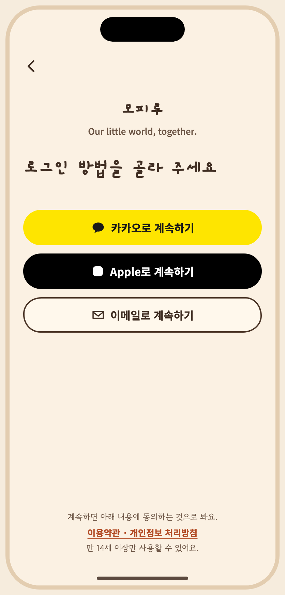

# S02 로그인 선택 / 인증 승인자: 미승인 승인일: 미정 ## 목적, ID, 경로 ID: S02 Route: /(auth)/login, /(auth)/email-code ## 디자인 원본 - [S02-login.dc.html](../../../canvas/project/S02-login.dc.html) ## 이미지 - [S02-select__ios-light-ko.png](../../../exports/S02-select__ios-light-ko.png) ## 상태와 상호작용 개발 빌드의 테스트 계정 빠른 로그인은 `login.quick.title`을 사용합니다. - **캔버스 보드**: `S02-login` - **개정(2026-10-27, 소유자 결정)**: 제품 로그인은 Sign in with Apple만 보여요(iOS는 Apple 공식 버튼, 처리 중·취소·오류 상태는 그대로). 카카오 버튼은 플래그로 숨기고, 이메일 선택·코드 입력은 개발 빌드 전용 테스트 로그인으로만 남아요. Android는 당분간 Apple 버튼이 없어요(웹 흐름은 Services ID 설정 뒤). 아래 원래 설명과 `S01-return`의 `login.kakao`·`login.email`은 이 개정이 우선해요. - **목적**: 카카오·Apple·이메일 선택, OAuth 이동·복귀, 처리 중, 취소, 재시도, 이메일 코드 입력·재전송·만료·시도 과다. - **이동**: S01 → 선택 → (카카오/Apple) 외부 이동 → 복귀 → 처리 중 → 공간 없음이면 S03, 있으면 홈. 이메일 → 주소 입력 → 6자리 코드(메일의 링크로도 가능) → 처리 중. - 카카오·Apple 버튼은 공식 에셋으로 교체할 자리표시예요. 카카오는 공식 노랑 #FEE500·검정 글자, Apple은 플랫폼 지침의 흑백을 그대로 써요. - 코드 방식(6자리)을 기본으로 그렸어요. 링크 방식만 쓸지는 구현 때 확정(인계 문서의 열린 질문). - Android도 Apple 로그인은 웹 흐름이라 같은 버튼을 써요. - 선택 화면 맨 위에 이름·슬로건 묶음이 있어요(글자 크기 130% 이상에서는 숨김). - **긴 문구·언어 사례**: 코드 안내 문구는 이메일 주소가 길어지면 줄바꿈돼요(주소는 줄 중간에서 끊지 않고 전체를 다음 줄로). | 상태 ID | 설명 | 사용하는 키 | 그린 조합 | |---|---|---|---| | `S02-select` | 로그인 방법 선택 | `main.appName` `brand.tagline` `login.title` `login.kakao` `login.apple` `login.email` `onb.legal.lead` `onb.legal.links` `onb.age` | iOS·밝게·ko, Android·어둡게·ko, iOS·밝게·en, Android·어둡게·ja 외 4 | | `S02-redirect` | OAuth 이동 중 (카카오) | `login.redirect.title` `login.redirect.body` `login.cancel` | iOS·밝게·ko, Android·어둡게·ko | | `S02-proc` | 복귀 후 처리 중 | `login.processing` | iOS·밝게·ko, Android·어둡게·ko | | `S02-cancel` | 취소 | `login.cancelled.title` `login.cancelled.body` `common.retry` `login.other` | iOS·밝게·ko, Android·어둡게·ko | | `S02-error` | 오류 · 재시도 | `login.error.title` `login.error.body` `common.retry` `login.other` | iOS·밝게·ko, Android·어둡게·ko | | `S02-email` | 이메일 입력 (입력 중) | `login.email.title` `login.email.label` `login.email.send` | iOS·밝게·ko, Android·어둡게·ko, iOS·밝게·ko·200% | | `S02-email-bad` | 이메일 형식 오류 | `login.email.title` `login.email.label` `login.email.invalid` `login.email.send` | iOS·밝게·ko, Android·어둡게·ko | | `S02-sending` | 이메일 코드 발송 중 | `login.email.title` `login.email.label` `login.email.send` | iOS·밝게·ko, Android·어둡게·ko | | `S02-code` | 코드 입력 (재전송 대기) | `login.code.wrong` `login.code.expired` `login.code.rate` `login.code.resendIn` `login.code.title` `login.code.body` `login.code.confirm` | iOS·밝게·ko, Android·어둡게·ko | | `S02-code-wrong` | 코드 불일치 | `login.code.wrong` `login.code.expired` `login.code.rate` `login.code.resend` `login.code.title` `login.code.body` `login.code.confirm` | iOS·밝게·ko, Android·어둡게·ko, iOS·밝게·en, Android·어둡게·ja | | `S02-code-exp` | 코드 만료 | `login.code.wrong` `login.code.expired` `login.code.rate` `login.code.resend` `login.code.title` `login.code.body` `login.code.confirm` | iOS·밝게·ko, Android·어둡게·ko | | `S02-code-rate` | 시도 과다 | `login.code.wrong` `login.code.expired` `login.code.rate` `login.code.resend` `login.code.title` `login.code.body` `login.code.confirm` | iOS·밝게·ko, Android·어둡게·ko | ## 이동 및 뒤로 F01: 앱 시작 → S01 → S02 → 공간 선택 S03 또는 S05. 뒤로: 로그인 → 소개; 인증 취소 → 로그인. 진입: 앱 시작. 나가기: 인증 후 공간 선택 또는 홈. ## 접근성 상태 표에 나열된 `a11y.*` 키를 스크린 리더 이름으로 사용합니다. 공통 접근성 및 200% 글자 규칙은 [interaction notes](../../../interaction-notes.md#10-접근성-상호작용)를 참조하세요. TODO: 해당 상태에 명시되지 않은 역할과 이름을 확인하세요. ## 수락 시나리오 - [ ] S02-AC-01: 인증이 완료되면 공간 상태에 따라 공간 선택 또는 홈으로 이동한다. - [ ] S02-AC-02: 인증 취소나 오류에서 다시 시도할 수 있다. ## 열린 질문 / 추적 TODO: 명세에 없는 disabled/offline 상태의 적용 여부와 정확한 뒤로 대상을 확인하세요. 시나리오와 요구사항·테스트·실행 결과는 [추적표](../../traceability.md)에 연결하세요.
| Key | 한국어 | English · draft G4 | 日本語 · draft G4 |
|---|---|---|---|
| brand.tagline | Our little world, together. | Our little world, together. | Our little world, together. |
| common.retry | 다시 시도 | Try again | もう一度試す |
| login.apple | Apple로 계속하기 | Continue with Apple | Appleで続ける |
| login.brandNote | 공식 버튼 에셋으로 교체 | Replace with official button asset | 公式ボタン素材に差し替え |
| login.cancel | 로그인 취소 | Cancel sign-in | ログインをやめる |
| login.cancelled.body | 원할 때 다시 시도할 수 있어요. | You can try again whenever you like. | いつでももう一度試せます。 |
| login.cancelled.title | 로그인을 취소했어요 | Sign-in was canceled | ログインをキャンセルしました |
| login.code.body | {email}로 6자리 코드를 보냈어요. 메일의 링크를 눌러도 로그인할 수 있어요. | We sent a 6-digit code to {email}. You can also tap the link in the email. | {email}に6桁のコードを送りました。メールのリンクをタップしてもログインできます。 |
| login.code.confirm | 확인 | Verify | 確認する |
| login.code.expired | 코드가 만료됐어요. 새 코드를 받아 주세요. | That code has expired. Request a new one. | コードの有効期限が切れました。新しいコードを受け取ってください。 |
| login.code.label | 인증 코드 | Verification code | 認証コード |
| login.code.rate | 시도가 너무 많아요. {m}분 뒤에 다시 해 주세요. | Too many attempts. Try again in {m} minutes. | 試行回数が多すぎます。{m}分後にもう一度お試しください。 |
| login.code.resend | 코드 다시 받기 | Resend code | コードを再送する |
| login.code.resendIn | {s}초 뒤에 다시 받을 수 있어요 | You can resend in {s}s | {s}秒後に再送できます |
| login.code.title | 메일로 보낸 코드를 입력해 주세요 | Enter the code we emailed you | メールで送ったコードを入力してください |
| login.code.wrong | 코드가 맞지 않아요. 다시 확인해 주세요. | That code isn't right. Check it and try again. | コードが違います。もう一度確認してください。 |
| login.email | 이메일로 계속하기 | Continue with email | メールで続ける |
| login.email.invalid | 이메일 주소 형식을 확인해 주세요. | Check the format of the email address. | メールアドレスの形式を確認してください。 |
| login.email.label | 이메일 | メールアドレス | |
| login.email.send | 인증 코드 받기 | Send me a code | 認証コードを受け取る |
| login.email.title | 이메일 주소를 입력해 주세요 | Enter your email address | メールアドレスを入力してください |
| login.error.body | 잠시 후 다시 시도하거나 다른 방법을 골라 주세요. | Try again in a moment, or choose another method. | しばらくしてからもう一度試すか、別の方法を選んでください。 |
| login.error.title | 로그인하지 못했어요 | Couldn't sign you in | ログインできませんでした |
| login.kakao | 카카오로 계속하기 | Continue with Kakao | Kakaoで続ける |
| login.other | 다른 방법으로 로그인 | Use another method | 別の方法でログイン |
| login.processing | 로그인하는 중이에요 | Signing you in | ログインしています |
| login.quick.title | DEV · 테스트 계정으로 바로 입장 | DEV · Enter with a test account | DEV · テストアカウントでログイン |
| login.redirect.body | 로그인을 마치면 아룸으로 돌아와요. | You'll come back to Aroom after signing in. | ログインが終わると、アルームに戻ります。 |
| login.redirect.title | 카카오로 이동하고 있어요 | Opening Kakao | Kakaoに移動しています |
| login.title | 로그인 방법을 골라 주세요 | Choose how to sign in | ログイン方法を選んでください |
| main.appName | 아룸 | Aroom | アルーム |
| onb.age | 만 14세 이상만 사용할 수 있어요. | You must be 14 or older to use Aroom. | ご利用は14歳以上の方に限ります。 |
| onb.legal.lead | 계속하면 만 14세 이상이며 아래 내용에 동의하는 것으로 봐요. | By continuing, you confirm you are 14 or older and agree to the following. | 続けると、14歳以上であり、以下に同意したものとみなされます。 |
| onb.legal.links | 이용약관 · 개인정보 처리방침 | Terms of Use · Privacy Policy | 利用規約 · プライバシーポリシー |